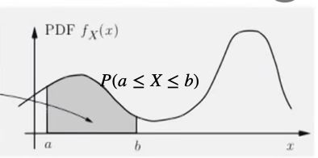
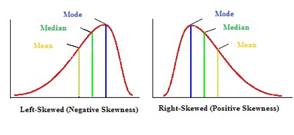
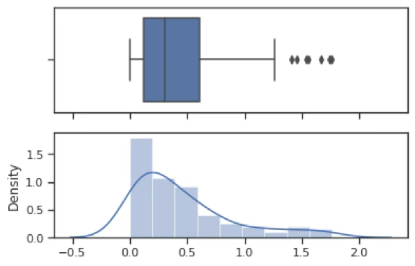
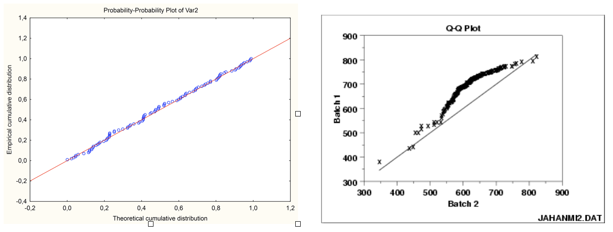
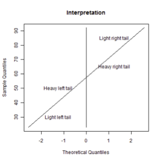
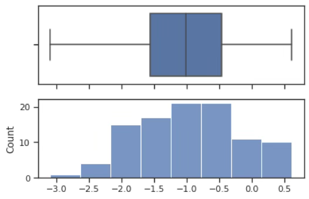

기초통계 6. 정규변환
chapter 1. 치우침
분포의 치우침(skewness)은 통계학에서 데이터 분포의 비대칭성을 나타내는 개념으로, 관측값들이 평균을 중심으로 얼마나 균형 있게 분포되어 있는지를 설명하는 데 사용된다. 분포가 완전히 대칭적이라면 치우침은 0이 되지만, 현실의 많은 데이터는 다양한 정도의 비대칭성을 보인다. 치우침 값이 양수이면 분포가 오른쪽(큰 값 쪽)으로 긴 꼬리를 가지며, 음수이면 왼쪽(작은 값 쪽)으로 긴 꼬리를 가진다.
이러한 치우침 개념은 통계학적으로 매우 중요한 의미를 가진다. 첫째, 치우침은 평균과 중앙값의 위치 차이를 설명하며, 대표값 선택이나 데이터 해석의 기준을 제공한다. 예를 들어, 우측으로 치우친 분포에서는 평균이 극단값의 영향을 받아 실제 중심 경향을 왜곡할 수 있기 때문에, 중앙값이 더 적절한 대표값이 될 수 있다.
둘째, 치우침은 정규성 가정의 검토에 핵심적인 역할을 한다. 많은 통계 기법(예: 회귀분석, 분산분석, t-검정 등)은 데이터가 정규분포를 따른다는 전제를 가지고 있으며, 치우침은 이러한 가정의 타당성을 점검하는 지표로 사용된다. 치우침이 클 경우에는 변수 변환(예: 로그, 제곱근)을 고려하거나, 비모수적인 접근법으로 전환할 필요가 있다.
셋째, 치우침은 이상치나 극단값의 존재 가능성을 시사한다. 한쪽 방향으로 치우친 분포는 그 방향에 극단적인 값이 존재할 가능성이 높으며, 이는 해석이나 모델의 안정성에 영향을 미친다.
요약하면, 치우침은 단순히 분포의 모양을 묘사하는 데 그치지 않고, 데이터의 중심 경향 이해, 적절한 통계 분석 기법의 선택, 이상치 탐지 등 다양한 통계적 판단에 영향을 주는 핵심 개념이다. 따라서 통계학에서는 치우침을 정량적으로 측정하고 시각적으로 확인하는 것이 중요한 분석 절차로 간주된다.
1. 치우침 개념
(1) 확률분포함수
확률분포함수는 데이터(확률변수)에 대한 모든 정보를 가지고 있다. 확률변수 관심 구간 \((a,b)\)에 데이터가 발생할 가능성(확률)을 알 수 있다. 최대값, 최소값, 데이터의 기대값(중앙 위치), 흩어짐 정도 등을 알 수 있다.

서로 상이한 집단이 혼재되어 있는지를 보여주는 최빈값(봉우리)의 개수도 나타내고 봉우리 중심으로 데이터의 흩어진 형태도 보여준다. 봉우리를 중심으로 데이터가 벨모양인지 아니면 꼬리가 서로 다른 형태인지 보여준다.
(2) 치우침 종류
종모양의 좌우 대칭인 분포와 달리 한 쪽 꼬리가 긴 형태를 갖는 분포는 치우침 skewed 이 있다고 한다. 오른쪽 꼬리가 긴 형태를 우로 right 치우침 혹은 양의 positive 치우침이라 하고 왼쪽 꼬리가 긴 형태를 좌로 left 치우침 혹은 음의 negative 치우침이라 한다.

좌로 치우침
좌로 치우침(left-skewed distribution)은 분포의 왼쪽 꼬리가 길게 늘어진 형태를 말한다. 이러한 분포에서는 상대적으로 작은 값들이 많거나 극단적으로 작은 값이 일부 존재하기 때문에, 평균이 중앙값보다 더 작게 계산되는 경향이 있다.
이는 평균이 값의 크기(산술적 중심)를 기준으로 계산되는 반면, 중앙값은 값의 순서(정렬된 위치상의 중심)를 기준으로 결정되기 때문이다. 따라서 좌측 꼬리에 위치한 작은 관측값들은 평균을 끌어내리지만, 중앙값에는 상대적으로 덜 영향을 미친다.
예를 들어, 대부분의 학생이 높은 점수를 받은 시험에서 소수의 낙제자가 존재할 경우, 평균 점수는 낮아질 수 있지만 중앙값은 여전히 높은 수준에 머무르게 된다. 이와 같은 상황이 바로 좌로 치우친 분포의 전형적인 사례다.
우로 치우침
우로 치우침(right-skewed distribution)은 분포의 오른쪽 꼬리가 길게 늘어진 형태로, 일부 큰 값들이 평균을 끌어올리는 특징을 가진다.
이러한 분포에서는 극단적으로 큰 관측값들이 전체 평균을 높이는 방향으로 작용하기 때문에, 평균은 중앙값보다 큰 값으로 계산되며, 분포의 오른쪽에 위치하게 된다. 반면 중앙값은 값의 순서를 기준으로 정해지므로, 이러한 극단값의 영향을 덜 받아 상대적으로 안정적인 위치에 머문다.
즉, 오른쪽 꼬리에 있는 소수의 큰 값들이 전체의 크기 중심(평균)을 오른쪽으로 이동시키며, 이로 인해 평균이 중앙값보다 오른쪽에 놓이게 된다. 대표적인 예로는 소득 분포가 있으며, 대부분의 사람들은 중간 이하의 소득을 가지지만 소수의 고소득자가 평균을 크게 끌어올려 평균 > 중앙값이 되는 현상이 나타난다.
2. 치우침 개념
치우침 문제와 통계적 추론의 관계
치우침은 단일 변수의 분포 형태를 이해하는 데 중요한 개념으로, 통계 분석 초기 단계에서 데이터를 시각화하고 분포의 대칭성 여부를 점검하는 데 사용된다. 특히 확률표본을 전제로 할 때, 표본의 확률분포 함수는 모집단 확률변수의 분포와 동일하다고 간주할 수 있으므로, 히스토그램 등을 통해 데이터의 분포 형태를 살펴보는 것이 바람직하다.
그러나 통계학의 모수 추론에서는 실제로 모집단의 확률분포 형태보다 추정량의 샘플링 분포가 더 중요한 역할을 한다. 평균이나 비율과 같은 추정량은 중심극한정리에 의해, 모집단이 비정규분포일지라도 표본 크기가 충분히 크다면 그 샘플링 분포는 정규분포에 근사하게 된다. 일반적으로 표본 크기가 20~30 이상일 경우 이러한 근사 정규성이 성립한다고 본다. 따라서 대표본을 확보한 경우에는 모집단의 분포가 치우쳐 있더라도, 평균이나 비율에 관한 통계적 검정에는 큰 문제가 되지 않는다.
반면 표본의 크기가 작거나, 평균이 아닌 분산과 같은 다른 모수에 대해 추론하고자 할 때는 모집단이 정규분포를 따른다는 전제가 필요해진다. 예를 들어, 소표본에서의 평균 추론에 사용되는 t-검정은 모집단의 정규성을 가정하고 있으며, 표본분산의 샘플링 분포가 카이제곱분포를 따른다는 사실 또한 모집단이 정규분포일 때에만 성립한다. 이러한 경우에는 데이터가 치우쳐 있을 경우 통계적 추론의 타당성이 저해될 수 있다.
요약하자면, 데이터 분포의 치우침은 단순히 분포 형태의 시각적 특징을 넘어, 통계적 추론의 방법 선택과 정당성에 영향을 미치는 요소이다. 대표본을 확보하면 중심극한정리에 따라 정규성 가정을 크게 걱정하지 않아도 되지만, 소표본이거나 정규성을 전제로 하는 모수 추론을 수행할 경우에는 반드시 데이터의 치우침과 분포 형태를 점검하고, 필요에 따라 적절한 자료 변환이나 분석 방법을 선택해야 한다.
통계 모형 (변수 관계)
통계 모형은 변수들 간의 관계를 수량적으로 설명하고 예측하는 도구이며, 이때 변수들은 크게 두 가지로 구분된다. 결과에 해당하는 변수는 목표변수라 하며, 이는 확률변수로 간주되어 확률분포함수를 가진다. 반면, 목표변수에 영향을 주는 변수들은 예측변수라고 하며, 이는 일반적으로 수집된 값으로 주어진 결정변수로 취급되어 확률분포함수를 갖지 않는다.
통계 모형, 특히 회귀분석과 같은 예측 모형에서는 오차항의 분포가 정규분포를 따른다는 가정이 매우 중요하다. 오차항이 정규분포를 따를 때, 회귀계수나 평균 등의 추정량에 대한 통계량의 샘플링 분포가 정규분포 또는 t, F 분포와 같은 이론분포를 따르게 되며, 이를 통해 모수에 대한 추론, 즉 가설검정이나 신뢰구간 추정이 가능해진다.
이러한 이론적 전제에 따라, 통계 모형에서는 목표변수만 확률변수로 간주되지만, 오차항이 정규분포를 따르면 결과적으로 목표변수도 정규분포에 근사하게 된다. 따라서 목표변수가 정규분포에서 크게 벗어나 있는 경우, 특히 치우침이 심한 경우에는 모형의 적합성이 떨어질 수 있고, 추론 결과의 신뢰성도 낮아질 수 있다.
이러한 이유로 통계 모형에서는 예측변수와 목표변수 모두가 정규분포에 근사할수록 분석의 안정성과 해석 가능성이 높아진다. 특히 목표변수의 분포에 치우침이 있다고 판단되면, 사전에 로그변환이나 제곱근 변환 등 적절한 자료 변환을 수행한 후 모형에 적용하는 것이 일반적이다. 예를 들어, 소득, 가격, 수능점수, 교통사고 발생 건수, 하루 코로나 확진자 수 등은 분포가 비대칭적이거나 장꼬리를 가지는 경우가 많아, 변환을 통해 정규성에 근접하게 만든 후 분석에 사용하는 것이 바람직하다.
결국 통계 모형의 안정성과 타당성을 확보하기 위해서는 변수의 분포, 특히 목표변수의 치우침 여부를 사전에 점검하고 필요한 경우 적절한 변환을 적용하는 것이 필수적인 절차라고 할 수 있다.
2. 치우침 진단 통계량
크기 왜도 pearson moment skewness
표본왜도 : \(skew = \frac{\sum(x_{i} - \overline{x})^{3}/n}{(\sum(x_{i} - \overline{x})^{2}/n)^{\frac{3}{2}}}\)
좌우대칭인 정규분포, \(t\)-분포 등의 왜도는 0이고 우로 치우친 분포 평균이 1인 지수분포는 2이다.
순서 왜도
정규분포=0, 우로 치우침 +, 좌로 치우침을 나타내지만 각 통계량의 분포를 모르므로 정규분포 가설을 검정할 수 없다.
pearson first skewness (mode skewness)
\[skew = \frac{mean - mode}{std}\]
Pearson's second skewness coefficient (median skewness)
\[skew = \frac{3(mean - median)}{std}\]
사분위 기반 왜도
\[skew = \frac{(Q_{3} + Q_{1} - 2Q_{2})}{IQR}\]
Groeneveld & Meeden’s coefficient
\[skew = \frac{mean - median}{E(|X - median|)}\]
chapter 2. 정규성 검정
1. 정규성 검정 필요성
정규성 검정(normality test)은 주어진 데이터가 정규분포를 따른다고 볼 수 있는지를 통계적으로 판단하는 절차이다. 이는 많은 통계 기법들이 데이터 또는 오차항이 정규분포를 따른다는 전제 하에 수행되기 때문에, 분석의 전제 조건을 확인하는 중요한 단계로 간주된다.
정규성 검정의 필요성은 통계 분석의 타당성을 확보하고, 분석 결과에 대한 신뢰도와 해석 가능성을 높이기 위한 데 있다. 많은 모수적 통계 방법들은 데이터가 정규분포를 따른다는 가정을 전제로 하며, 이 가정이 충족되지 않을 경우 분석 결과는 왜곡되거나 잘못된 결론을 초래할 수 있다.
정규성 검정은 단순한 분포 진단을 넘어서, 분석 방법의 선택, 모형의 타당성 평가, 해석의 신뢰도 확보라는 측면에서 통계학적으로 필수적인 과정이다.
모수적 방법의 전제 확인: 평균에 대한 t-검정, 회귀분석, 분산분석(ANOVA) 등 대부분의 고전적 통계 기법은 오차항 또는 데이터 자체가 정규분포를 따른다고 가정한다. 이 가정이 충족되어야 통계량의 분포가 이론적으로 성립하며, p값이나 신뢰구간이 의미를 가진다.
소표본 분석에서의 중요성: 중심극한정리에 따라 대규모 표본에서는 정규성의 중요성이 다소 줄어들 수 있지만, 표본의 크기가 작을수록 정규성 가정이 더 민감하게 작용한다. 이 경우 정규성을 만족하지 않으면 검정력이 저하되거나 제1종 오류율이 왜곡될 수 있다.
모형 진단과 적합성 평가: 회귀모형 등에서는 종속변수보다 오차항의 정규성이 중요한데, 이 정규성이 깨지면 회귀계수의 t-검정, 모형의 유의성 검정(F-검정) 등의 신뢰성이 떨어진다. 따라서 잔차 분석과 정규성 검정은 모형 적합성 진단의 기본 절차이다.
자료 변환 또는 분석 전략 결정: 정규성 가정을 만족하지 않을 경우, 로그 변환, 제곱근 변환, Box–Cox 변환 등의 자료 변환을 고려해야 하며, 경우에 따라 비모수적 검정이나 로버스트 분석 기법을 사용해야 한다. 정규성 검정은 이러한 분석 전략 변경의 필요성을 판단하는 기초가 된다.
정규성 검정은 크게 두 가지 방법으로 수행된다. 하나는 시각적 방법이고, 다른 하나는 정량적 방법이다. 시각적 방법으로는 히스토그램, Q–Q 그래프, P–P 그래프 등이 있으며, 이는 데이터가 정규분포와 얼마나 유사한지 직관적으로 확인할 수 있게 해준다. 정량적 방법으로는 샤피로–윌크 검정, 콜모고로프–스미르노프 검정, 앤더슨–달링 검정, 자크–베라 검정 등이 사용되며, 정규성을 통계적으로 검정할 수 있다.
정규성 검정의 결과는 단순히 가정 충족 여부를 확인하는 데 그치지 않는다. 정규성 위배가 확인될 경우, 연구자는 변수를 변환하거나, 비모수적 방법으로 분석 전략을 변경하거나, 로버스트 통계기법을 적용해야 한다. 따라서 정규성 검정은 통계 분석의 신뢰성을 확보하기 위한 필수적인 절차로서 기능한다.
2. 정규성 검정방법
통계적 가설
정규성 검정은 데이터(확률변수)의 분포가 정규분포를 따르는지 검정하는 분포 적합성 goodness of fits 검정이다.
귀무가설 : 데이터 모집단 분포는 정규분포이다.
대립가설 : 정규분포를 따르지는 않는다. 그러므로 어떤 분포인지는 모른다.
#데이터 생성하기
import numpy as np
data=np.random.exponential(0.5,100)
data.mean()0.455767
평균이 0.5인 지수분포를 따르는 난수 데이터 100개를 표본추출하여 변수명 X로 한 data를 만들었다. 평균이 0.5인 모집단에서 생성했지만 실제 평균은 0.456이었다. 랜덤 생성이므로 실행할 때마다 결과는 다르다.
#그래프 요약, 히스토그램, 상자수염그림
import seaborn as sns
import matplotlib.pyplot as plt
sns.set(style="ticks")
f, (ax_box, ax_hist) = plt.subplots(2,sharex=True)
sns.boxplot(X, ax=ax_box)
sns.distplot(X, ax=ax_hist)
plt.show()지수분포로 우로 치우친 형태를 가지고 있다. 극단치 ourliers 여러 개가 존재한다.

Shapiro Wilk W-통계량
\(W = \frac{\left( \sum_{i = 1}^{n}a_{i}x_{(i)} \right)^{2}}{\sum_{i = 1}^{n}(x_{i} - \overline{x})^{2}}\), 여기서 \(x_{(i)}\)는 정렬된 표본 데이터 (오름차순 순위), \(\overline{x}\)은 표본 평균, \(a_{i}\)는 기대값과 분산공분산 행렬을 기반으로 계산된 상수 (분산행렬을 통해 계산됨)이다.
다음은 정규성 검정 통계량 변환 (Z-값으로 표준화)이다. \(W_{n}\)는 Shapiro–Wilk 검정 통계량이고 \(\mu,\sigma,\gamma\)은 표본크기 n에 따라 정해지는 보정 계수이다.
\[Z_{n} = \{\begin{matrix} \frac{- \log(\gamma - \log(1 - W_{n})) - \mu}{\sigma}, & \text{if}4 \leq n \leq 11 \\ \frac{\log(1 - W_{n}) - \mu}{\sigma}, & \text{if}12 \leq n \leq 2000 \end{matrix}\]
#사피로윌크 정규성검정
import scipy.stats as stats
chisq,p_value=stats.shapiro(data)
print("검정통계량=",chisq,"유의확률",p_value)검정통계량= 0.84497141 유의확률7.765954990190949e-09
유의확률이 <0.001이므로 귀무가설(정규분포를 따른다)이 기각되어 데이터는 정규분포를 따르지 않는다.
Kolmogorov D-통계량
\(D = \max_{x}\left| F_{n}(x) - \Phi(x) \right|\), 여기서 \(\Phi(x)\)는 이론적 분포함수, \(F_{n}(x)\)는 데이터 분포함수이다. 유의확률이 매우 작아 귀무가설이 기각되어 정규분포를 따르지 않는다. 모수 추정 결과를 매개변수로 넣을 수 있다.
import scipy.stats as stats
stats.kstest(data,'norm',args=(data.mean(),data.std()))KstestResult(statistic=np.float64(0.1484722011700535), pvalue=np.float64(0.02177174264952343) 유의확률이 0.05보다 작으므로 귀무가설이 기각되어 정규분포를 따르지 않는다.
적합성 검정 가능한 분포
dist{’norm’, ’expon’, ’logistic’, ’gumbel’, ’gumbel_l’, ’gumbel_r’, ’extreme1’} 가능한 함수
귀무가설 : 데이터는 지수분포를 따른다.
대립가설 : 데이터는 지수분포를 따르지 않는다.
유의확률이 0.629로 귀무가설을 기각하지 못하므로 지수분포를 따른다.
import scipy.stats as stats
stats.kstest(data,'expon',args=(0,data.mean()))KstestResult(statistic=np.float64(0.047886640415504195), pvalue=np.float64(0.9675172438463417), 유의확률이 0.96이므로 귀무가설이 채택되어 데이터는 지수분포를 따른다.
Anderson-Darling AD 통계량
\(A^{2} = n\int_{- \infty}^{\infty}\frac{\lbrack F_{n}(x) - \Phi(x)\rbrack^{2}}{\Phi(x)(1 - \Phi(x))}d\Phi(x)\), 여기서 \(\Phi(x)\)는 이론적 분포함수, \(F_{n}(x)\)는 데이터 분포함수이다
통계량 값이 6.69로 가장 큰 기각역 값 1.053 (여기에 해당하는 유의수준은 0.01)보다 크므로 귀무가설이 기각되어 정규분포를 따르지 않는다.
import scipy.stats as stats
stats.anderson(data,dist='norm')AndersonResult(statistic=np.float64(4.621782528955748), critical_values=array([0.555, 0.632, 0.759, 0.885, 1.053]), significance_level=array([15. , 10. , 5. , 2.5, 1. ]), fit_result= params: FitParams(loc=np.float64(0.46777570761475146), scale=np.float64(0.4466578954689332))
통계량 4.621782528955748이 유의수준 1% 기각역 1.053보다 매우 크므로 귀무가설이 기각되어 정규분포를 따르지 않는다.
대부분의 분포에 대한 적합성 검정은 가능하다. scipy.stats 분포
귀무가설 : 데이터는 지수분포를 따른다.
대립가설 : 데이터는 지수분포를 따르지 않는다.
import scipy.stats as stats
stats.anderson(data,dist='expon')AndersonResult(statistic=np.float64(0.2290116329263725), critical_values=array([0.917, 1.072, 1.333, 1.596, 1.945]), significance_level=array([15. , 10. , 5. , 2.5, 1. ])
유의수준 15% 기각값보다 작으므로 귀무가설을 기각하지 못하므로 지수분포를 따른다.
3. 시각적 방법
Probability Plot은 정규성 검정 또는 두 분포의 유사성을 시각적으로 평가하기 위한 방법으로, 이론적 분포함수와 데이터의 분포함수가 얼마나 유사한지를 그래프를 통해 보여준다. 이러한 시각적 방법은 데이터의 분포 특성, 특히 비대칭성이나 꼬리 분포 등을 직관적으로 파악하는 데 유용하다.
두 데이터의 실증적 empirical 분포함수는 동일한가?
이론적 분포함수와 데이터의 분포함수는 동일한가? 보여주는 시각적 그래프
Probability-Probability plot
두 분포의 누적분포함수(CDF) 값을 비교하는 그래프이다. 일반적으로 X축에는 이론 분포(예: 정규분포)의 누적확률 값을, Y축에는 표본 데이터의 누적확률 값을 대응시켜 그린다. 만약 두 분포가 유사하다면, 모든 점이 대각선 직선 위에 놓이게 된다. 이 방법은 분포 전체의 전반적인 적합도를 확인하는 데 적합하다.
두 데이터의 누적분포함수를 2차원 그래프에 표현함, X-축에는 정규분포의 누적분포함수 \(\phi(z)\), Y-축에는 데이터 누적분포함수 \(F(x)\)
Quantile-Quantile plot
두 분포의 분위(quantile) 값을 비교하는 그래프이다. X축에는 이론 분포의 p-백분위 값, Y축에는 표본 데이터의 p-백분위 값을 대응시킨다. 두 분포가 유사하면 데이터 점들은 대각선 직선을 따라 정렬되며, 직선에서 벗어나는 양상은 치우침, 첨도, 이상치 등을 시사할 수 있다. 특히 Q–Q Plot은 분포의 꼬리 부분 적합도를 확인하는 데 유용하다.
두 데이터의 누적분포함수를 2차원 그래프에 표현함, X-축에는 임의의 한 데이터의 백분위 값 \(x_{i} = F^{- 1}\left( \frac{i - 0.5}{n} \right)\) 혹은 이론 정규분포의 백분위 값 \(x_{i} = \Phi^{- 1}\left( \frac{i - 0.5}{n} \right)\), Y-축은 데이터의 순서통계량 \(y_{(i)}\)이다.


chapter 3. 정규변환
1. 정규변환 개념
통계학에서 많은 추론 방법은 정규분포를 전제로 한다. 예를 들어, t-검정, 분산분석, 선형회귀, 분산분석, 신뢰구간 추정 등의 고전적 통계기법들은 대부분 변수 또는 오차항이 정규분포를 따른다는 가정 하에 수행된다. 그러나 실제 자료는 이상치, 왜도, 첨도 등의 특성으로 인해 이러한 정규성 가정을 만족하지 않는 경우가 많다. 이러한 상황에서 데이터를 통계 분석이 가능한 형태로 전처리하기 위한 기법 중 하나가 바로 정규변환이다.
정규변환이란, 정규분포를 따르지 않는 자료를 가능한 한 정규분포에 가깝게 변환하는 방법을 의미한다. 이는 분석 대상 변수에 수학적 변환(예: 로그, 제곱근, Box–Cox 등)을 적용하여 분포의 비대칭성이나 이상치를 완화하고, 정규성에 가까운 형태로 만드는 과정이다. 즉, 변수 \(X\)를 어떤 함수 \(g( \cdot )\)를 통해 \(Y = g(X)\)로 변환함으로써 \(Y \sim N(\mu,\sigma^{2})\)에 근접하도록 만드는 것이 목표이다.
2. 정규변환 방법
- 간단한 정규변환 방식
우측 치우침 (Positive Skewness)
데이터가 오른쪽 꼬리를 길게 갖고 있음 → 많은 소수 값 + 일부 극단적으로 큰 값이 존재한다.
\[\sqrt{X} \rightarrow \ln(X) \rightarrow \frac{1}{X}\]
\(\sqrt{X}\): 왜도 완화 (온건한 변환)
\(\ln(X)\): 지수적 증가 완화, 양수 변수에 적합
\(\frac{1}{X}\): 극단적 치우침 완화 (하지만 해석 어려워짐)
좌측 치우침 (Negative Skewness)
데이터가 왼쪽 꼬리를 길게 갖고 있음 → 많은 큰 값 + 일부 작은 값이 존재한다.
\[\sqrt{\max(X + 1) - X} \rightarrow \ln(\max(X + 1) - X) \rightarrow \frac{1}{\max(X + 1) - X}\]
여기서 \(\max(X + 1) - X\)는 데이터를 좌우 반전하여 우측 치우침처럼 만들어 변환한 뒤, 분석 전에 다시 해석 가능한 형태로 돌리기 위한 기법이다.
\(\max(X + 1) - X\): 데이터 반전 (거꾸로 뒤집음)
그 뒤에 우측 치우침 처리 방식(\(\sqrt{},\ln(),1/X\)) 적용
반전 데이터에서 변환을 적용하면 좌측 치우침 완화 가능
- Modified Tukey Ladder of Power 변환
실제 데이터를 분석할 때, 변수의 분포는 종종 정규성을 위배하는 형태를 가진다. 이러한 왜도나 첨도를 조정하여 정규분포에 근접하게 만들기 위한 기법 중 하나가 Tukey 사다리 변환이다. 이 방법은 John Tukey에 의해 제안되었으며, 변수에 다양한 지수(\(\lambda\))를 적용함으로써 분포의 비대칭성을 완화하고 분석의 적합성을 높이는 데 목적이 있다.
\[Y = \{\begin{matrix} X^{\lambda}, & \text{if}\lambda > 0 \\ \ln(X), & \text{if}\lambda = 0 \\ - X^{\lambda}, & \text{if}\lambda < 0 \end{matrix}\]
부호 반전이 포함된 이유는, λ가 음수일 경우 변환 결과가 기존 변수와 반대 방향의 변화를 가지게 되기 때문이다. 예를 들어, \(\lambda = - 1\)이면 \(X^{- 1} = 1/X\)은 X가 클수록 작아지므로, 부호를 반전하여 관계를 원래 방향과 맞추는 것이다.
| λ 값 | 변환 형태 | 적용 예시 |
| 2 | \[X^{2}\] | 좌측 꼬리 완화 |
| 0.5 | \[\sqrt{X}\] | 온건한 정규화 |
| 0 | \[\ln(X)\] | 지수적 분포의 선형화 |
| -0.5 | \[- 1/\sqrt{X}\] | 극단적 우측 왜도 완화 |
| -1 | \[- 1/X\] | 역수형 자료의 정규화 |
이 변환은 분석 대상 변수의 왜도 방향과 정도에 따라 지수 형태의 수학적 변환을 적용함으로써, 데이터를 정규분포에 가깝게 만드는 실용적인 방법이다. 이 변환은 지수(λ)의 부호에 따라 양의 치우침 또는 음의 치우침을 완화하는 데 사용되며, 특히 회귀분석, 분산분석 등 정규성 가정을 요구하는 통계기법에서 전처리 단계로 유용하게 활용된다. 부호 반전(-)은 해석상의 방향성을 유지하기 위한 실용적 조정이며, 정규변환의 목적에 부합한다.
- Box–Cox 변환 (Box–Cox Transformation)
Box–Cox 변환은 1964년 George Box와 David Cox가 제안한 기법으로, 정규성 확보와 분산 안정화를 동시에 추구할 수 있는 유연한 변환 방법이다. 특정 수학적 함수 하나에 의존하는 것이 아니라, 지수 매개변수 \(\lambda\)를 조절함으로써 다양한 변환을 포함할 수 있도록 설계되어 있다. 이는 통계 분석에서 종속변수의 정규성을 확보하거나, 선형 모형에서 잔차의 분산을 일정하게 만들고자 할 때 매우 유용하게 사용된다. \(Y = \{\begin{matrix} \frac{X^{\lambda} - 1}{\lambda}, & \text{if}\lambda \neq 0 \\ \ln(X), & \text{if}\lambda = 0 \end{matrix}\)
이는 Tukey의 Ladder of Power 변환과 형태는 유사하지만, \(\lambda\)의 값을 최대우도추정(MLE) 으로 찾는다는 점에서 실용적으로 더욱 발전된 형태이다. 그리고 \(X\)값은 반드시 양수이어야 하므로 음수가 있는 데이터는 최소값이 0을 초과하도록 변환 한 후 Box–Cox 변환을 적용해야 한다.
- Yeo–Johnson 변환
Yeo–Johnson 변환은 2000년에 In-Kwon Yeo와 Richard A. Johnson이 제안한 정규성 확보를 위한 변환 기법으로, Box–Cox 변환의 확장판이다. Box–Cox 변환은 입력값이 양수일 때만 정의되지만, Yeo–Johnson 변환은 음수와 0까지 포함한 데이터를 변환할 수 있다는 장점이 있다. 따라서, 데이터에 음수나 0이 포함되어 있거나, Box–Cox로 정규성이 확보되지 않는 경우 더 유연하게 적용 가능한 대안이다.
\[Y(\lambda) = \{\begin{matrix} \frac{(X + 1)^{\lambda} - 1}{\lambda}, & \text{if}X \geq 0,\lambda \neq 0 \\ \log(X + 1), & \text{if}X \geq 0,\lambda = 0 \\ - \frac{( - X + 1)^{2 - \lambda} - 1}{2 - \lambda}, & \text{if}X < 0,\lambda \neq 2 \\ \bullet \log( - X + 1), & \text{if}X < 0,\lambda = 2 \end{matrix}\]
from scipy.stats import boxcox, anderson
import seaborn as sns
# 1. 데이터 불러오기 및 전처리
titanic = sns.load_dataset("titanic")
data = titanic['age'].dropna()
# 2. 양수만 필터링 (Box–Cox는 양수 자료만 허용)
data = data[data > 0]
# 3. Box–Cox 변환 및 최적의 λ 추정
transformed_data, best_lambda = boxcox(data)
print(f"최적의 λ = {best_lambda:.4f}")
# 4.Lilliefors 검정 (정규성 검정)
stat, p_value = lilliefors(transformed_data)
print(f"Lilliefors 통계량 D = {stat:.4f}, p-value = {p_value:.4f}")BOX-COX 최적의 λ = 0.7628
Lilliefors 통계량 D = 0.0647, p-value = 0.0010
from sklearn.preprocessing import PowerTransformer
# 2. Yeo–Johnson 변환기 정의 및 적용
pt = PowerTransformer(method='yeo-johnson', standardize=False)
transformed = pt.fit_transform(data).flatten()
# 3. 최적 λ 확인
best_lambda = pt.lambdas_[0]
print(f"Yeo–Johnson 최적 λ = {best_lambda:.4f}")
# 4. 정규성 검정 (Anderson–Darling)
stat, p_value = lilliefors(transformed)
print(f"Lilliefors 통계량 D = {stat:.4f}, p-value = {p_value:.4f}")Yeo–Johnson 최적 λ = 0.7583
Lilliefors 통계량 D = 0.0634, p-value = 0.0010
Box–Cox 및 Yeo–Johnson 변환은 모두 정규성을 확보하기 위한 강력한 기법이나 다음과 같은 경우에는 통계적으로 유의미한 정규성 개선이 이루어지지 않을 수 있다.
본질적으로 정규분포가 아닌 데이터 구조
다봉성(multi-modality)이나 이질성(heterogeneity)의 존재
극단적인 이상치 또는 높은 왜도
표본 수가 너무 커서 민감한 정규성 검정이 기각을 유발 (n이 클수록 아주 작은 일탈도 기각됨)
3. BOX-COX 정규변환 사례
#데이터 생성하기
import numpy as np
X=np.random.exponential(0.5,100)
X.mean()평균이 0.5인 지수분포를 따르는 난수 데이터 100개를 표본추출하여 변수명 X로 한 data를 만들었다. 평균이 0.5인 모집단에서 생성했지만 실제 평균은 0.456이었다. 랜덤 생성이므로 실행할 때마다 결과는 다르다.
#그래프 요약, 히스토그램, 상자수염그림
import seaborn as sns
import matplotlib.pyplot as plt
sns.set(style="ticks")
f, (ax_box, ax_hist) = plt.subplots(2,sharex=True)
sns.boxplot(X, ax=ax_box)
sns.distplot(X, ax=ax_hist)
plt.show()지수분포로 우로 치우친 형태를 가지고 있다. 극단치 ourliers 여러 개가 존재한다.

#BOX-cox 정규변환
import scipy.stats as stats
Xt,lmd = stats.boxcox(X)
lmd0.2959412663878202 최적 값은 0.296이다.
#변환 데이터 정규성 검정
import scipy.stats as stats
stats.shapiro(Xt)유의확률이 0.69이므로 귀무가설이 채택되어 변환한 정규성을 만족한다. (0.9903486967086792, 0.6927880644798279)
